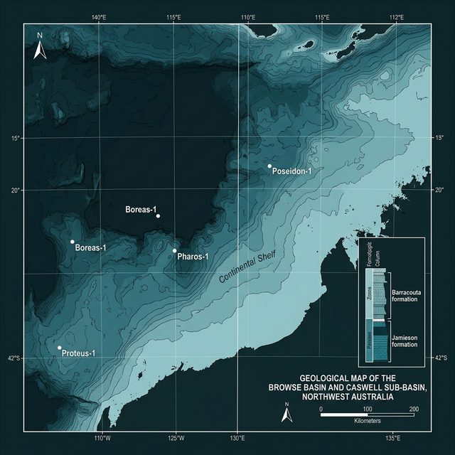
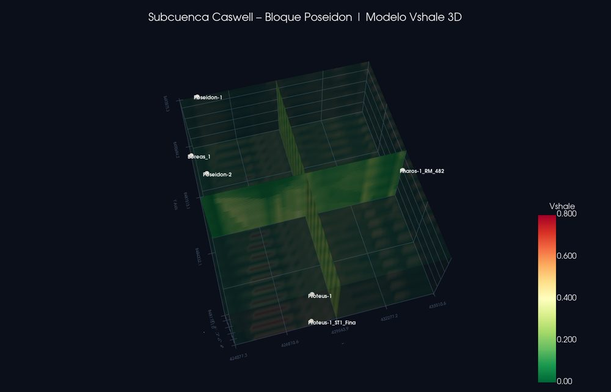
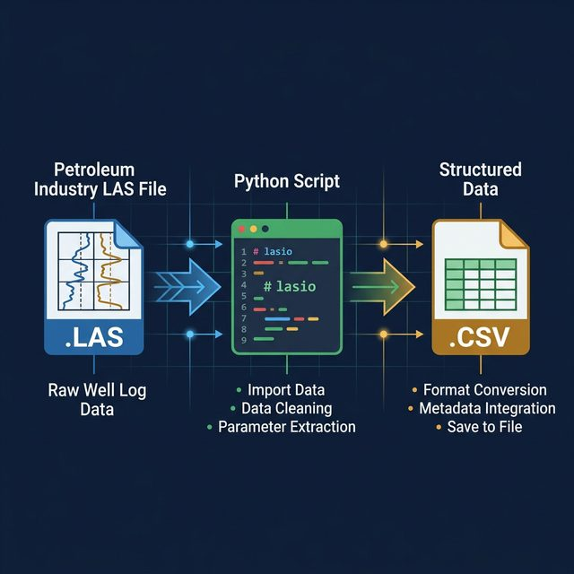
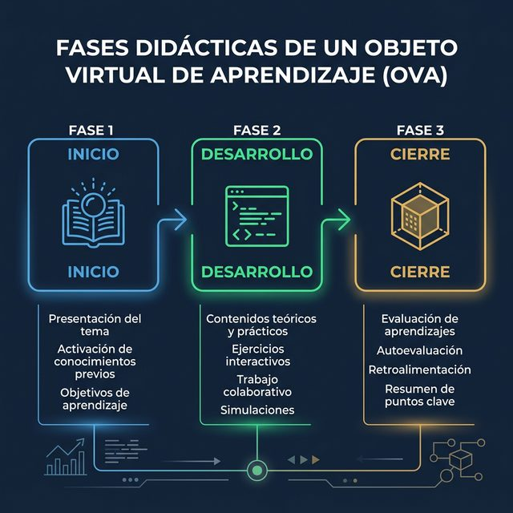
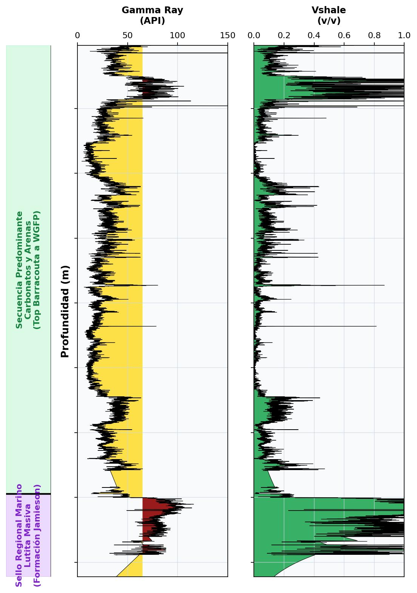
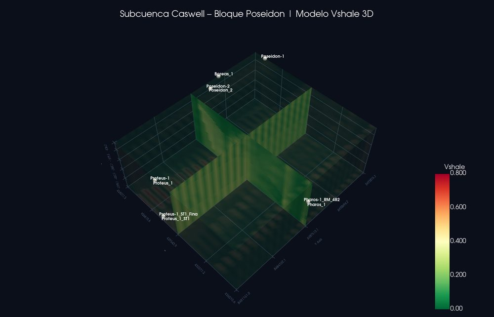
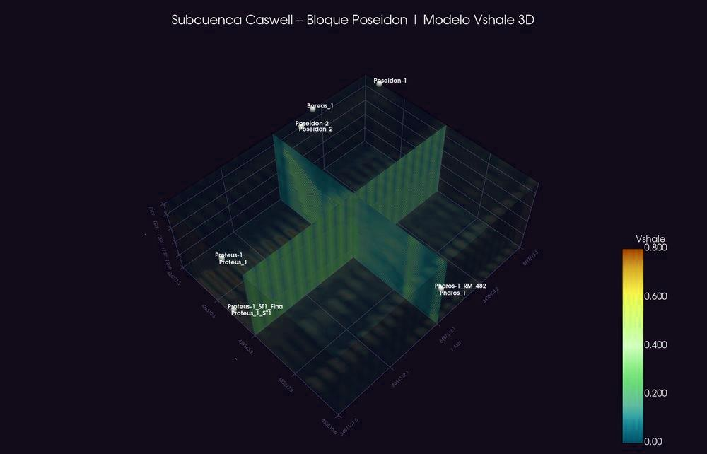

Desarrollar un OVA que integre un modelo geoestadístico 3D del Vshale, construido con scripts Python públicos, para fortalecer competencias de modelado en estudiantes de geociencias.

Lasio — lectura de archivos .LAS (estándar industria)Pandas — manipulación de datos tabularesNumPy / SciPy — cálculos matemáticos e interpolaciónPyVista — visualización 3D interactiva
las_to_csv_Integrated.py — Ingesta y conversión .LAS
→ .CSVnormalizacion_vshale.py — Cálculo petrofísico
Larionovsegmentacion.py — Blocking litológico (Window=5,
Umbral=0.05)interpolacion_3d_with_wells.py — IDW anisotrópico +
PyVista
El registro 1D se correlaciona con la unidad estratigráfica horizontal esperada:

Window=5, Umbral=0.05Segmento_ID únicoStructuredGrid) X–Y–Z0.05 en Z — busca similitud lateral


Quedo a disposición del jurado para responder inquietudes.